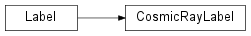

label¶
label.labeler Module¶
This module contains all the functionality required to perform a connected-component labeling analysis. It is broken into two classes, one base class for arbtirary label objects and one specific to cosmic rays
Classes¶
|
Class for generating the cosmic ray label |
|
Base class for cosmic ray labelers to be used in both IR and CCD analyses |
Class Inheritance Diagram¶
